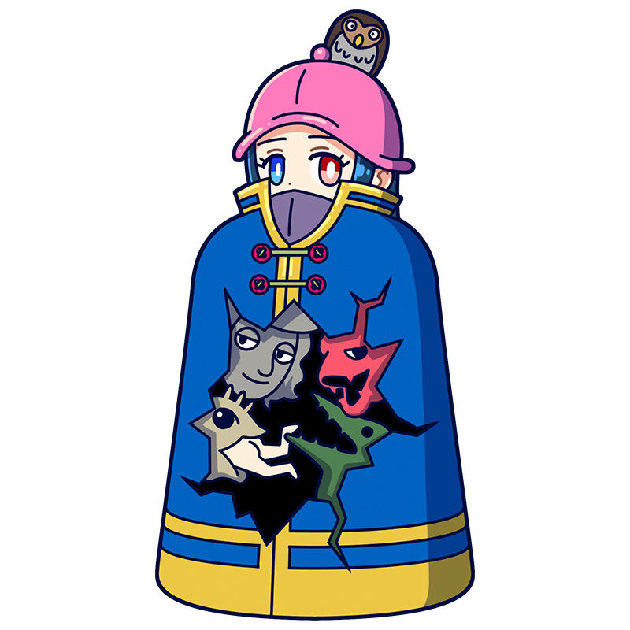

所詮この世は地獄なんだ。
楽しんだもの勝ちだと、思わないかい？
ボッス
故郷を想う画家の世界は
魑魅魍魎のフルコース！
ルネサンス期に活躍した奇想のミューズ。地獄の光景を観察するのが趣味で、どこか達観した雰囲気を漂わせている。一方でお茶目な一面もあり、弟子のブリューゲルといっしょにイタズラを楽しむことも。
様式
北方ルネサンス
出身国
ブラバント公国(現ベルギー、オランダ)
代表作
- 『快楽の園』
- 『トゥヌグダルスの幻視』
- 『放浪者』など
ボッスといえばこの一枚！
快楽の園
３つのパネルからなる三連祭壇画であり、ボッスの作品でも特に大きい。左は楽園、右は地獄、中央は現在の快楽の園が描かれている。一見明るく見える中央のパネルだが描かれているのは快楽に耽ける人々であり、彼らもやがて右側の地獄に落ちることになるだろう。極端に大きな果物や奇妙な姿の悪魔たちなど非現実の光景を描いた本作は同時代の絵画と比べても異色であり、約400年後に生まれるシュルレアリスムの画家たちにも多大なる刺激を与えた。
制作年
1500-1505年頃
技法・材質
油彩、板
寸法
220 cm x 389 cm
所蔵
プラド美術館
(スペイン)
作品画像出典: https://commons.wikimedia.org/wiki/File:El_jard%C3%ADn_de_las_Delicias,_de_El_Bosco.jpg
ボッスってどんな芸術家？
ヒエロニムス・ボッス
北方ルネサンスを代表する画家。ヒエロニムス・ボッスは本名ではなく、故郷の名前、ス・ヘルトーヘンボスに由来すると言われる。その人生についての記録はあまり残っておらず、現存作品は30点ほどと、謎に包まれた画家である。地元のキリスト教団体に所属し宗教画を手がけたが、その多くは奇怪な怪物や幻想的な地獄を主題としており、幻想絵画の先駆者とも言われている。西洋美術史でも異色の存在である。
フルネーム
Jheronimus van Aken
誕生
1450年頃
死没
1516年8月9日(???歳没)